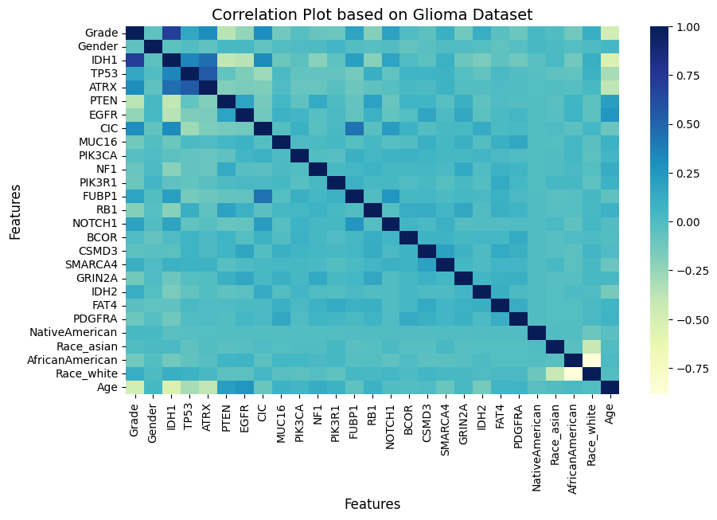
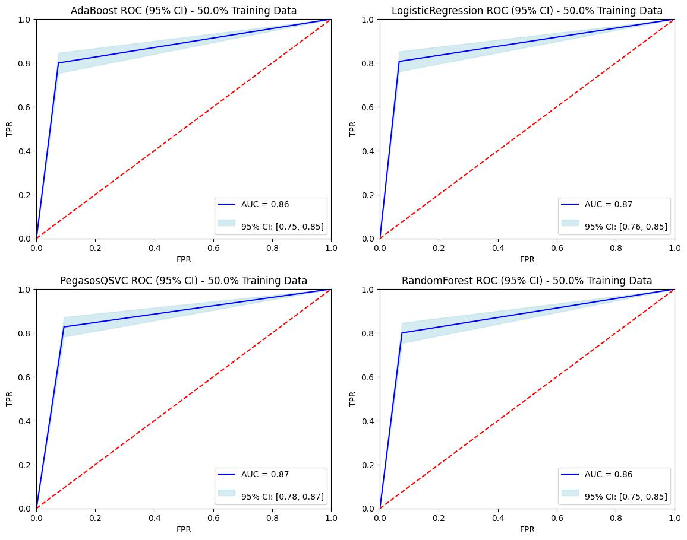
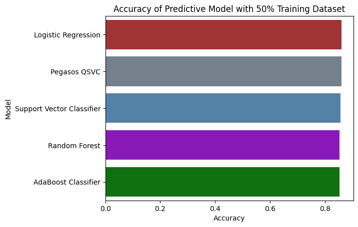
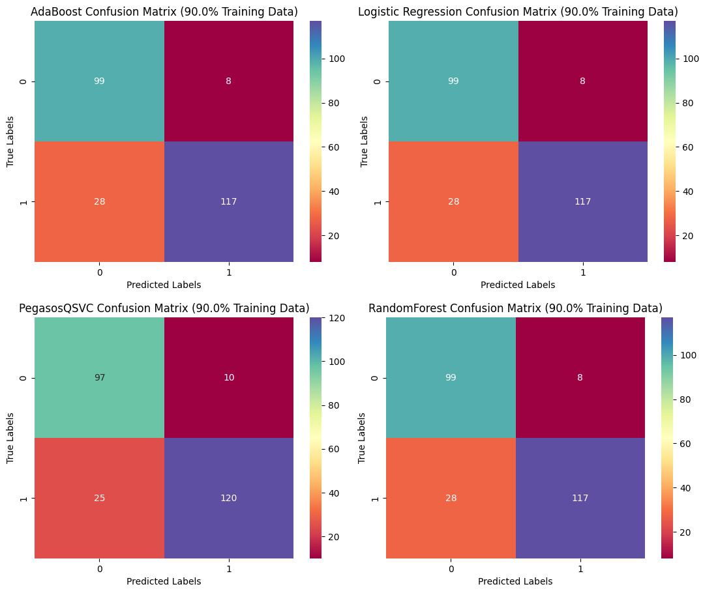
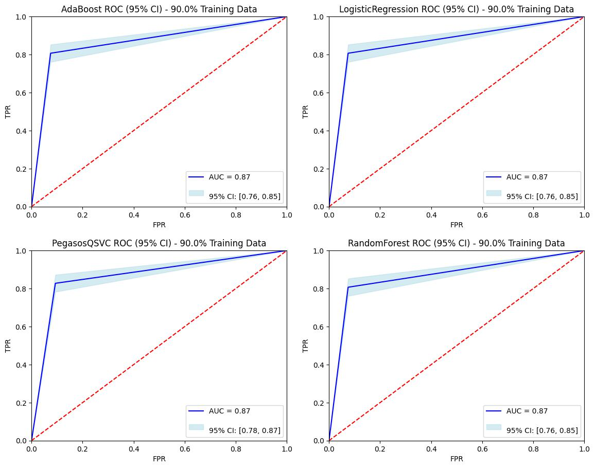
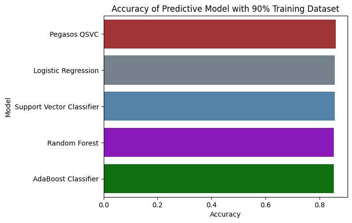

Glioma Grade Classification
Introduction
Gliomas are the most common primary brain tumors, classified as either Lower-Grade Gliomas (LGG) or Glioblastoma Multiforme (GBM) based on histological and imaging criteria. Accurate and early classification of glioma grades is crucial for determining the appropriate treatment plan and improving patient outcomes. This project focuses on building predictive models for early detection of LGG using clinical and molecular features.
Objective and Data
Our objective is to identify key variables that can effectively indicate early signs of Lower-Grade Glioma (LGG). We utilized data from the TCGA-LGG and TCGA-GBM projects, focusing on the 20 most frequently mutated genes and three clinical features. These variables were carefully selected through correlation analysis to avoid multicollinearity.
Key Predictor Variables
-
IDH1
What it is: Isocitrate dehydrogenase 1 is an enzyme involved in cellular metabolism.
Why it matters: Mutations in the IDH1 gene are common in gliomas, particularly lower-grade astrocytomas. These mutations can lead to the accumulation of a harmful metabolite, which can influence tumor behavior.
Predictive value: IDH1 mutations are generally associated with a better prognosis compared to gliomas without these mutations.
-
Age
Why it matters: Age is a significant risk factor for glioma development. Older individuals are more likely to develop gliomas.
Predictive value: The age at diagnosis can provide clues about the type and grade of glioma. For example, younger patients are more likely to have certain types of gliomas, such as pilocytic astrocytomas.
-
ATRX
What it is: ATRX is a protein involved in chromatin remodeling, a process that regulates gene expression.
Why it matters: Mutations in the ATRX gene are frequently found in gliomas, particularly oligodendrogliomas and glioblastomas.
Predictive value: ATRX mutations can be associated with a more aggressive tumor phenotype and a poorer prognosis.
-
CIC
What it is: CIC is a tumor suppressor gene involved in the regulation of cell growth and division.
Why it matters: Mutations in the CIC gene are commonly found in oligodendrogliomas.
Predictive value: CIC mutations can be associated with a better prognosis compared to oligodendrogliomas without these mutations.
Methodology
We developed multiple machine learning models to classify glioma grades, including Logistic Regression, Random Forest, AdaBoost Classifier, Support Vector Classifier (SVC), and Pegasos Quantum SVC. The models were trained on different splits of the dataset (50% and 90%) to evaluate their robustness and generalizability. Hyperparameter tuning was performed to optimize model performance.
Confusion Matrix with 50% Training Dataset
ROC Curve with 50% Training Dataset
- 
Accuracy with 50% Training Dataset
- 
Confusion Matrix with 90% Training Dataset
- 
ROC Curve with 90% Training Dataset
- 
Accuracy with 90% Training Dataset
- 
Conclusion and Impact
The Pegasos Quantum SVC model outperformed other models with an accuracy of 86.1% and an AUC of 0.8671, demonstrating its potential for robust classification of glioma grades. By integrating molecular and clinical features, the developed models can significantly aid in the early detection of LGG, potentially improving treatment strategies and patient prognosis. This project highlights the power of machine learning in healthcare and its potential to make a positive impact on patient outcomes.